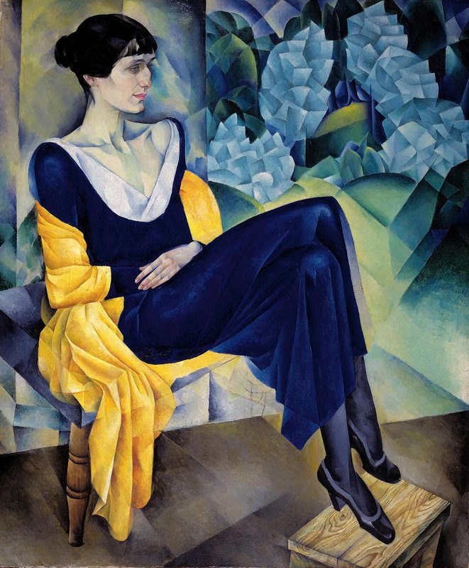

Анна Ахматова: хроника эпохи в поэзии и прозе
Анна Андреевна Ахматова (настоящая фамилия — Горенко) родилась 23 июня 1889 года в Одессе. Её творческая биография охватывает почти весь советский период: от Октябрьской революции 1917 года до хрущёвской «оттепели» 1960-х годов. Поэтесса пережила революцию, Гражданскую войну, красный террор 1920-х, Большой террор 1930-х, блокаду Ленинграда, травлю 1946 года и частичную реабилитацию в конце жизни. Её тексты, особенно поздние, зафиксировали факты и эмоции, которые советская официальная пропаганда стремилась стереть из памяти.
Несмотря на то, что Ахматова известна в первую очередь как поэт, её творчество, особенно поэма «Реквием» (1935–1940), содержит ярко выраженные черты прозы. В отличие от ранней любовной лирики, «Реквием» построен на диалогах, развёрнутых сценах, повествовании от первого лица и почти документальной фиксации событий. Это сближает поэму с жанром документальной прозы — воспоминаний, хроники, репортажа.
Литературоведы неоднократно отмечали параллели между «Реквиемом» и лагерной прозой Варлама Шаламова («Колымские рассказы») и Александра Солженицына («Архипелаг ГУЛАГ»). Все три автора ставили перед собой задачу засвидетельствовать правду о сталинских репрессиях, но сделали это разными художественными средствами. Шаламов и Солженицын писали прозу, Ахматова — стихи. Однако их общая цель — сохранение памяти о миллионах невинных жертв — роднит их творчество.
Судьба Ахматовой оказалась тесно связана с судьбами нескольких крупных прозаиков. В первую очередь, это Михаил Зощенко (1894–1958), автор сатирических рассказов «Аристократка», «История одной болезни», «Обезьяний язык». 14 августа 1946 года вышло совместное постановление ЦК ВКП(б) «О журналах "Звезда" и "Ленинград"», где стихи Ахматовой и проза Зощенко были названы «идейно вредными». Оба писателя были исключены из Союза писателей СССР, лишены продовольственных пайков и возможности печататься. Их травля в прессе продолжалась несколько лет.
Другая важная фигура — Лидия Гинзбург (1902–1990), литературовед и прозаик, автор книги «Записки блокадного человека» (опубликована полностью в 1984 году). Гинзбург была близкой подругой Ахматовой на протяжении десятилетий и оставила подробные мемуарные записи о ней. Эти записи считаются уникальным источником по истории русской литературы XX века.
Борис Пастернак (1890–1960), автор романа «Доктор Живаго», также поддерживал Ахматову, особенно в трудные для неё годы. Их переписка частично опубликована. Иосиф Бродский (1940–1996) познакомился с Ахматовой в 1960-х годах и считал её своим главным учителем. Его эссеистика («Меньше единицы», «Набережная неисцелимых») — образец прозы, написанной поэтом. Влияние Ахматовой на его стиль и жизненную позицию было огромным.
Марина Цветаева (1892–1941) в стихотворении 1913 года назвала Ахматову «Златоустой Анной всея Руси». Это прозвище закрепилось за поэтессой и подчёркивает её особое место в русской культуре.

— из поэмы «Реквием»